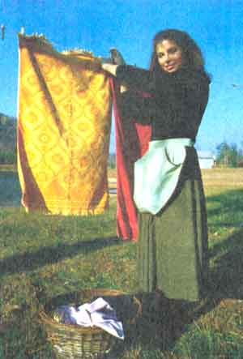
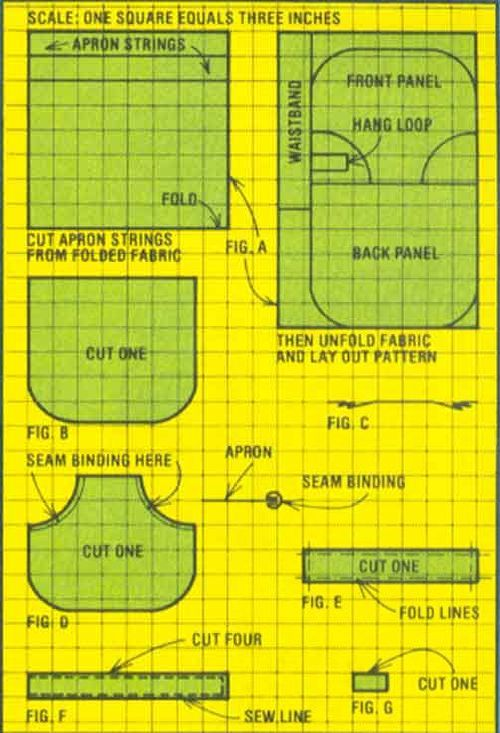

My mother originally used an apron-style clothespin bag in Germany ... and brought the pattern to America with her. When I was younger, I disliked wearing the heavy contraption around my waist... but-now that I have laundry of my own- I've gone back to the old ways. In fact, I'm convinced that anyone who hangs his or her wash on the line will love the convenience of this easy-to-make, big-pocket apron. And, you can whip one up for yourself in less than two hours!
All you need is a piece of material that measures 24 by 48 inches (preferably a heavy cotton or lightweight canvas or linen), plus 70 inches of bias seam binding (or a 70-inch strip of 1-1/4"-wide fabric).
Step 1: Cut two 12-inch strips of seam binding (or of the narrow fabric), leaving one strip 46 inches long.
Step 2; Cut out the apron pieces as shown in Fig. A.
Step 3: Sew in four half-inch pleats on the apron's back panel (Fig. B) to match the top view shown in Fig. C.
Step 4: Pin the two 12-inch pieces of seam or fabric binding over the pocket edges of the front panel (Fig. D) to keep the edges from fraying. Then, sew the binding in place.
Step 5: With the right side of the fabric facing you, pin the front and back panels together, matching the curved edges. Then, take the 46-inch piece of seam binding and finish off the entire outside edge of the apron as in Step 4. (Be sure to catch both layers of the fabric inside the binding, and stitch it twice ... to support the weight of all those clothespins.)
Step 6: Fold the waistband along the lines shown in Fig. E and iron the creases in place. Now, fold the entire band in half, lengthwise, and iron again. With that done, pin the waistband to the top of the two panels, in much the same manner as with the seam binding . . . but, this time, catch 3/4 inch of the material inside the waistband. Then stitch the band in place, being sure to leave its ends open.
Step 7: Place each pair of apron-string pieces together, wrong sides out, and sew them to each other as shown in Fig, F, leaving one end of each string open. Trim the excess material from the seams and turn the tubes right side out. (A knitting needle or similar long object pushed through the fabric "cylinder" would make this job easier.) Iron the ties flat, insert the edges into the open ends of the waistband and sew them in place, going over the seam two or more times for strength.
Step 8: Fold the "long" edges of the hang loop (Fig. G) in to the center, and then crease the piece down the middle, enclosing the cut sides. Sew the loop lengthwise several times, and then pin its ends-with the cut edges turned under- so that the loop is spread (horizontally) across the center point of the waistband, and stitch the little strap firmly in place.
That's all there is to it! I usually wrap the apron strings around me once and then tie them in front ... to keep the heavily loaded apron from sagging. Of course, even this handy little piece of clothing won't guarantee that you'll enjoy every washday, but it'll sure make the work go more quickly!
|
 |
 |
|